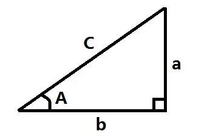
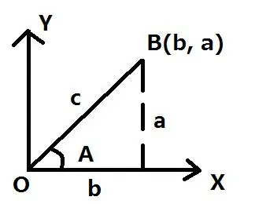

本模块可运行验证纯 C# · 无需 Unity · 点右下按钮真实编译执行
C#
// 数学与物理公式：插值、抛物线、运动学
double Lerp(double a, double b, double t) => a + (b - a) * Math.Clamp(t, 0, 1);
double SmoothStep(double t) { t = Math.Clamp(t, 0, 1); return t * t * (3 - 2 * t); }
double EaseOut(double t) { t = Math.Clamp(t, 0, 1); return 1 - Math.Pow(1 - t, 3); }
Console.WriteLine("三种插值曲线（t: 0 -> 1，值从 0 到 100）：");
Console.WriteLine($"{"t",-6}{"Lerp",-10}{"SmoothStep",-12}{"EaseOut",-10}");
foreach (var t in new[] { 0.0, 0.25, 0.5, 0.75, 1.0 })
Console.WriteLine($"{t,-6:F2}{Lerp(0, 100, t),-10:F1}{Lerp(0, 100, SmoothStep(t)),-12:F1}{Lerp(0, 100, EaseOut(t)),-10:F1}");
Console.WriteLine(" SmoothStep 两端慢、中间快，适合镜头推进；EaseOut 起步快、收尾稳，适合弹窗弹出");
Console.WriteLine();
Console.WriteLine("抛物线弹道（初速 v0、角度 θ、重力 g，忽略空气阻力）：");
double v0 = 12, g = 9.8;
foreach (var deg in new[] { 15.0, 30.0, 45.0, 60.0, 75.0 })
{
double rad = deg * Math.PI / 180;
double vx = v0 * Math.Cos(rad), vy = v0 * Math.Sin(rad);
double flight = 2 * vy / g;
double range = vx * flight;
double peak = vy * vy / (2 * g);
Console.WriteLine($" θ={deg,4}° 水平速度={vx,5:F2} 滞空={flight,4:F2}s 射程={range,5:F2}m 最高={peak,4:F2}m");
}
Console.WriteLine(" 45° 射程最远，这不是巧合：sin(2θ) 在 θ=45° 取最大值");
Console.WriteLine();
Console.WriteLine("帧率无关的平滑跟随（阻尼）：");
double cur = 0, target = 100;
foreach (var dt in new[] { 0.016, 0.033, 0.016 })
{
double k = 1 - Math.Exp(-8 * dt); // 关键：用 1-e^(-λdt) 而不是固定 lerp 系数
cur = cur + (target - cur) * k;
Console.WriteLine($" dt={dt * 1000,5:F1}ms -> {cur,6:F2} （固定系数写法在低帧率下会变慢）");
}加载中…
三角形相关
三角形
 |  | |
| 勾股定理：a² + b² = c² |
| 三角函数公式汇总表 | |||
| 分类 | 公式名称 | 公式表达式 | |
| 基本三角函数定义 | 正弦函数定义 | sinA = a / c | |
| 余弦函数定义 | cosA = b / c | ||
| 正切函数定义 | tanA = a / b | ||
| 余切函数定义 | cotA = b / a | ||
| 正割函数定义 | secA = c / b | ||
| 余割函数定义 | cscA = c / a | ||
| 平方关系 | 三角函数平方关系 | (singA)²+(cosA)² = 1 | |
| 和差角公式（常用） | 正弦和角公式 | sin(A + B) = sinA*cosB + cosA*sinB | |
| 正弦差角公式 | sin(A - B) = sinA*cosB - cosA*sinB | ||
| 余弦和角公式 | cos(A + B) = cosA*cosB - sinA*sinB | ||
| 余弦差角公式 | cos(A - B) = cosA*cosB + sinA*sinB | ||
| 正切和角公式 | tan(A + B) = ( tanA + tanB ) / ( 1 - tanA*tanB ) | ||
| 正切差角公式 | tan(A - B) = ( tanA - tanB ) / ( 1 + tanA*tanB ) | ||
| 余切和角公式 | cot(A + B) = ( cotA*cotB - 1 ) / ( cotA + cotB ) | ||
| 余切差角公式 | cot(A - B) = ( cotA*cotB + 1 ) / ( cotA - cotB ) | ||
| 倍角公式 | 正弦倍角公式 | sin2A = 2*sinA*cosA | |
| 余弦倍角公式 | cos2A = (cosA)² - (sinA)² = 2(cosA)² - 1 = 1 - 2(sinA)² | ||
| 正切倍角公式 | tan2A = 2tanA / [ 1 - (tanA)² ]; | ||
| 积化和差（不常用） | 正弦余弦积化和差 | sinA*cosB=[sin(A+B)+sin(A-B)]/2 | |
| 余弦正弦积化和差 | cosA*sinB=[sin(A+B)-sin(A-B)]/2 | ||
| 余弦余弦积化和差 | cosA*cosB=[cos(A+B)+cos(A-B)]/2 | ||
| 正弦正弦积化和差 | sinA*sinB=[cos(A-B)-cos(A+B)]/2 | ||
| 积差化积（不常用） | 正弦和化积公式 | sinA+sinB=2sin[(A+B)/2]cos[(A-B)/2] | |
| 正弦差化积公式 | sinA-sinB=2sin[(A-B)/2]cos[(A+B)/2] | ||
| 余弦和化积公式 | cosA+cosB=2cos[(A+B)/2]cos[(A-B)/2] | ||
| 余弦差化积公式 | cosA-cosB=-2sin[(A+B)/2]sin[(A-B)/2] |
圆
两个圆：圆心距 d 与半径 R、r 决定是否相交语义重绘
周长：2πR
面积：πR²
圆相交：AB < R + r
弧度角度转换：角度 = 弧度 * ( 180 / π )
矩形相交
A（x,Y）文字还原
检测一个矩形的四个点是否在另外一个矩形范围内
矩形相交判定（四个点全部落在对方范围内）公式
物理公式
| 力学与运动学公式汇总表 | ||||
| 分类 | 物理量/指标 | 公式 | 说明 | |
| 重力相关 | 重力 | G = m*g | 地球表面附近的物体，由于地球的吸引而受到的力 | |
| 质量 | m | 物体所含物质的多少，单位为千克(kg) | ||
| 重力加速度 | g | 常量，地球表面附近通常取9.8N/kg | ||
| 匀速直线运动 | 速度 | V = S / t | 匀速运动中，速度等于路程除以时间 | |
| 路程 | S = V * t | 匀速运动中，路程等于速度乘以时间 | ||
| 时间 | t = S / V | 匀速运动中，时间等于路程除以速度 | ||
| 匀加速直线运动 | 平均速度 | V平 = S / t | 总位移除以总时间 | |
| 中间时刻速度 | V(t/2) = V平 = (V末 + V0)/2 | 匀变速运动中，中间时刻的瞬时速度等于平均速度 | ||
| 末速度 | V末 = V0 + a*t | 速度与时间的关系公式 | ||
| 加速度 | a = (V末 - V0)/t | 速度变化量与发生这一变化所用时间的比值 | ||
| 位移 | S = V平*t = V0*t + ½*a*t² = (V末/2)*t | 匀加速直线运动位移的三种等价计算方式 | ||
| 自由落体运动 | 下落高度 | S = ½*g*t² | 初速度为0的匀加速直线运动，位移计算公式 | |
| 末速度 | V = V0 + g*t | 自由落体的速度公式，通常初速度V0=0 | ||
| 速度-位移推论 | Vt² = 2*g*S | 末速度的平方等于2倍重力加速度乘以下落高度 | ||
| 竖直上抛运动 | 位移 | S = V0*t - ½*g*t² | 竖直上抛的位移公式，向上为正方向 | |
| 往返时间 | t = 2*V0/g | 从抛出到落回原位置的总时间 | ||
| 最大上升高度 | Smax = V0²/(2*g) | 上升到最高点时的位移，已修正原公式的计算逻辑错误 | ||
| 末速度 | V = V0 - g*t | 竖直上抛的速度公式，向上为正方向 |
Unity引擎当中有自带的物理系统，但是在实际开发中物理系统伴随着更高的性能消耗，并且有些需求我们并不需要模拟真实的物理效果，只需要部分采用物理规律，比如2D横版动作游戏当中的上抛、下落、加速运动等等。
这时我们就需要利用这些物理公式自己进行逻辑处理，所以掌握基本的物理公式，在游戏开发中很重要！
原稿此篇以公式图片为主 · 以下为补充整理 非语雀原文
向量：游戏里最常用的五个运算
| 运算 | 公式 | 典型用途 |
| 长度 | |a| = √(x²+y²+z²) | 算距离（比 Distance 少一次开方可用平方距离比较） |
| 归一化 | â = a / |a| | 只要方向不要长度 |
| 点积 | a·b = |a||b|cosθ | 判断前后、夹角、投影 |
| 叉积 | a×b（仅 3D） | 求法线、判断左右（y 分量正负） |
| 投影 | proj = (a·b̂)b̂ | 把速度分解到某方向 |
实用技巧：判断「敌人在不在我前方 60° 内」，不用算角度，直接比较点积与 cos60°=0.5，省掉一次 acos。
插值：三种曲线各自适合什么
- Lerp（线性）：匀速。适合位置跟随、血条数值，缺点是观感生硬。
- SmoothStep（t²(3-2t)）：两端慢中间快。适合镜头推进、开门动画。
- EaseOut（1-(1-t)³）：起步快收尾稳。适合弹窗弹出、飘字。
做平滑跟随（相机、摇杆）时，千万别用固定的 Lerp(a, b, 0.1f)，那样帧率越高跟随越快。正确写法是 1 - e^(-λ·dt)，让系数随 dt 自适应，低帧率下速度才一致。
运动学：三个能直接套的公式
- 匀加速位移：s = v₀t + ½at²。用于跳跃高度、刹车距离。
- 抛体射程：R = v₀²sin(2θ)/g，45° 最远；最高点 h = v₀²sin²θ/(2g)。
- 弹簧阻尼：a = -k(x - x₀) - c·v。做果冻效果、UI 弹性回弹比单纯 Lerp 自然得多。
坐标系与角度
Unity 的欧拉角顺序是 Z→X→Y（绕自身轴），所以直接改 eulerAngles 做旋转经常出现「万向锁」式的诡异结果；需要连续旋转时用 Quaternion 相乘，或者 Quaternion.Euler 一次性给出目标角度。屏幕坐标转世界坐标用 Camera.ScreenToWorldPoint，注意 z 要填相机到目标的距离，否则永远得到相机位置。